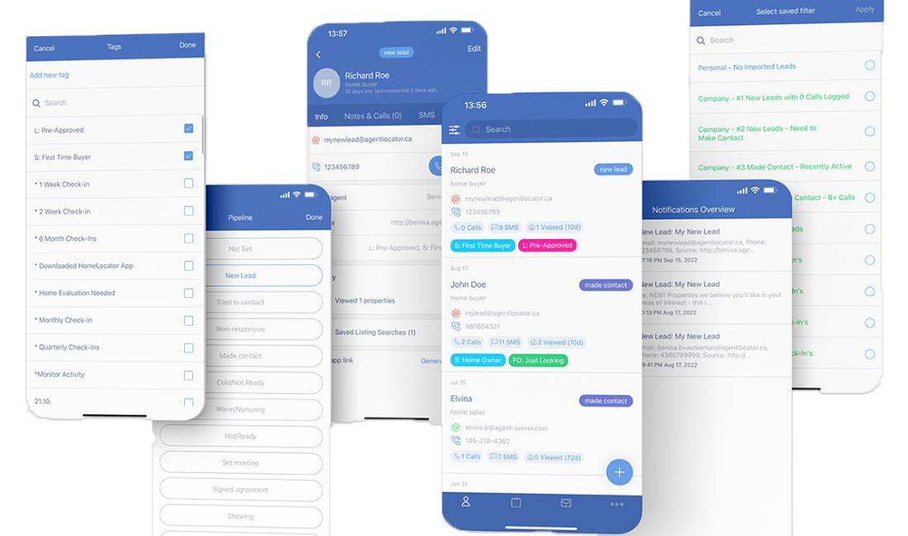
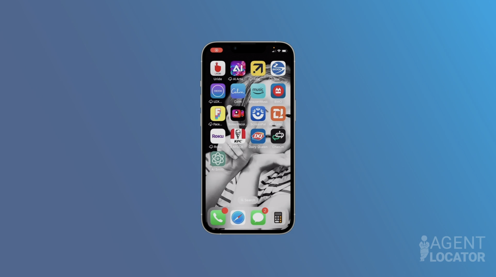
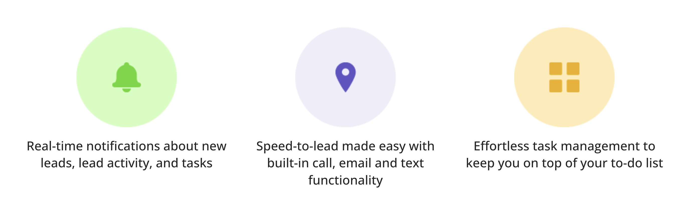

Project Overview
During my time at Agent Locator in Mississauga, Ontario, I worked as a Software Engineer on their customer relationship management (CRM) consumer-facing mobile application. The Agent Locator CRM app enables real estate agents to manage their leads and tasks from anywhere, providing seamless access to their entire database on their smartphones.

The application allows clients to browse through real estate listings and properties in their area while giving real estate agents powerful tools to engage with leads, manage their contacts, and organize their tasks efficiently. The app essentially provides all the functionality of the desktop CRM in a mobile format, enabling agents to respond to leads immediately without needing to access their computers.
The Challenge
Real estate agents face several challenges in their daily work that the Agent Locator app needed to address:
- Slow response times to new leads, reducing conversion rates
- Difficulty managing client information and follow-ups while on the go
- Inefficient communication with potential clients across multiple channels
- Need to access property listings and client information from anywhere
- Challenge of maintaining consistent follow-up schedules with leads
- Complex integration requirements with existing CRM systems
"Real estate agents needed a mobile solution that would give them the power of their desktop CRM in their pocket, allowing for instant follow-up and management of their entire client database while in the field."
Our challenge was to create a comprehensive mobile application that could deliver all the essential CRM features with an intuitive user interface, ensuring agents could effectively manage their business from anywhere while providing a seamless experience for potential homebuyers browsing property listings.
The Solution
We developed a cross-platform mobile application that functions as an extension of the desktop CRM, providing real estate agents with a complete toolkit for managing leads, tasks, and client communications on the go.
📱
Real-Time Notifications
Instant alerts for new leads, lead activity, and upcoming tasks to ensure no opportunity is missed.
📞
Integrated Communication
Built-in calling, email, and texting functionality for immediate response to leads without switching apps.
✅
Task Management
Comprehensive task management with reminders and push notifications to keep agents on top of their follow-ups.

Key Features
- Lead Management: Ability to add new contacts, update information, and organize leads with tags and notes.
- Property Browsing: Search and browse real estate listings with detailed property information.
- Communication Tools: Integrated calling, texting, and emailing capabilities directly from the app.
- E-Campaign Integration: Options to apply or stop email campaigns to leads.
- Task Scheduling: Create, edit, and manage follow-up tasks with reminder notifications.
- Database Management: Complete access to the agent's contact database for viewing and editing.
- Cross-Platform Compatibility: Available on both iOS and Android devices with consistent functionality.
My Role & Contributions
As a Software Engineer on this project, my responsibilities included:
- Development of the mobile application using Xamarin.Forms for cross-platform functionality
- Implementation of OAuth/Cookie/Token authentication and authorization flows
- Integration with backend APIs for real-time data synchronization
- Creating a responsive UI that worked across different device sizes
- Implementing push notification services for real-time lead alerts
- Working with platform-specific features for optimal performance on both iOS and Android
- Ensuring secure data handling for sensitive client information
Technology Stack
Xamarin.Native
Xamarin.Forms
C#
.NET Framework
iOS
Android
XCode
Visual Studio for Mac
OAuth
REST APIs
Azure DevOps
Results & Impact
The Agent Locator Mobile App has delivered significant value to real estate professionals:
- Dramatically improved lead response times, increasing conversion rates by enabling agents to respond while on the go
- Enhanced agent productivity by providing complete database access from mobile devices
- Streamlined client communications through integrated calling, emailing, and texting capabilities
- Improved task completion rates through push notification reminders
- Reduced administrative time spent on managing contacts and updating client information
- Provided a seamless experience between desktop and mobile platforms for real estate agents

The application has become an essential tool for real estate agents using the Agent Locator CRM, allowing them to effectively manage their business from anywhere and respond to opportunities immediately, significantly improving their ability to convert leads and provide better service to clients.
"By bringing the power of the desktop CRM to mobile devices, we've enabled real estate agents to respond faster, work more efficiently, and ultimately close more deals."